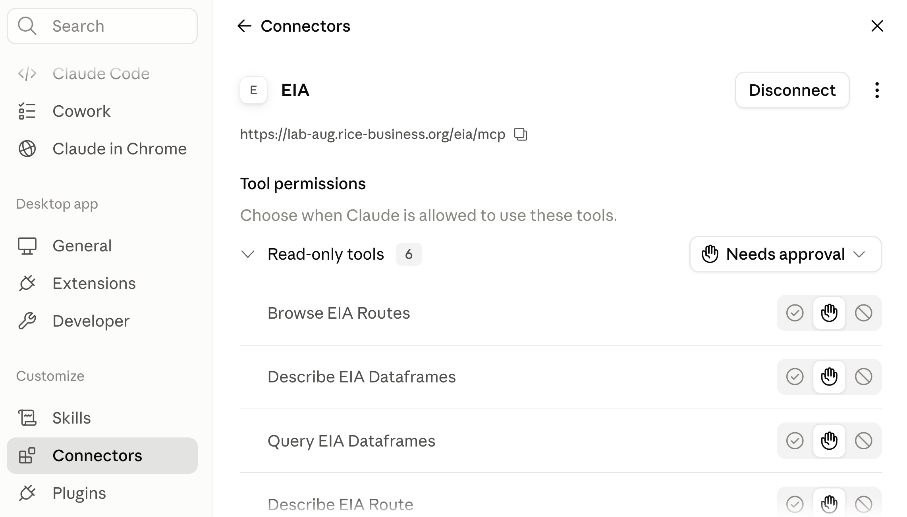

5. Corporate AI
Rice Business 2026
Rice Business
Enterprise Adoption
| Anthropic | OpenAI | Open Source | ||
|---|---|---|---|---|
| Enterprise LLM spend (Menlo) | 40% | 27% | 21% | 12% |
| Company usage (Datadog) | ~46% (+23 pts YoY) | 63% of companies | ~37% (+20 pts YoY) | 13% of workloads |
| Code generation (Menlo) | 54% | 21% | ? | ? |
Anthropic is #1 by enterprise spend; OpenAI is #1 by breadth of adoption. The default enterprise strategy is multi-model — 69% of companies use 3+ models, routing different tasks to different providers. Closed-source models power 85–90% of enterprise workloads.
Corporate Applications
Talk to Company Data
Agent writes SQL and Python to generate tables, figures, and docs in response to user prompts
Talk to Company Documents
Embed doc chunks in a vector database; find similar chunks and add to the prompt for LLM analysis
Take Actions
Give the agent tools to update an ERP, file a ticket, send an invoice
Prompt Injection Risk
An injection is an instruction hidden in text the model reads — a web page, an email, an uploaded file. All three applications can be hijacked by one: data exfiltrated, analysis corrupted, improper actions taken.
Solution
Isolation from untrusted sources, by two complementary paths:
Restrict the tools
- The agent gets only the tools its job needs
- No web tools: no page an attacker controls enters the context, and nothing carries data out
- A tool the agent does not have cannot be talked into use
Restrict egress
- Run the agent in a container whose network reaches an allowlist of hosts and nothing else
- Guards even code the model writes and the agent executes
Today’s Session
1
API Calls
Keys and billing, and what the raw API does not come with
2
Build a Chatbot
Two prompts to build, two to deploy — then the RAG version
3
AI Agents
A chatbot with tools, and the three kinds the SDK offers
4
Connectors
MCP, and adding one to Claude Desktop yourself
5
Build an Agent
An energy data agent, in a container with no way out
6
An AI Business
Sell it per seat, and defend the margin on cheaper models
The same two questions run through every step: which tools does it have, and what can it reach?
API Calls
Python Code for an API Call
import anthropic
client = anthropic.Anthropic() # reads ANTHROPIC_API_KEY from .env
response = client.messages.create(
model="claude-opus-4-5",
max_tokens=1024,
system="You are a research assistant for a finance department.",
messages=[{"role": "user", "content": "Summarize the Fama-French factors."}],
)
print(response.content[0].text)That is the whole API. You supply the model, the system prompt, and the messages; you get text back. The system line is there only because we put it there — omit it and the model is given no instructions at all.
What Does Not Come With It
No system prompt
Nothing tells the model who it is, what it may refuse, or what house style to use. The field is empty until you fill it.
No conversation
Each call is answered in isolation. The model has no idea you spoke to it thirty seconds ago.
No tools
No web search, no file reading, no code execution. It reads text and writes text.
No memory
Nothing is stored between calls. No history, no preferences, no notes about you.
Claude Desktop and Claude Code are applications built on this API. The system prompt, the running conversation, the tools, the memory are things Anthropic wrote on top.
API Keys
Get one
At console.anthropic.com — a separate account from claude.ai
Per-token billing
Billed per token used, separate from your subscription
No subscription needed
You don’t need a Claude subscription to get an API key, just a credit card
It is a credential
Equivalent to a username and password — you are billed for anyone who uses it
Claude Enterprise Agreements
- Billing is per token, like API key accounts
- Data processing agreement (and BAA for HIPAA): contractual agreement to protect data, including “do not train” and zero retention
Harness rental
- Additional charge per seat to use Claude Chat, Cowork, and Code
- A company could build its own Chat/Cowork/Code version or use open-source versions (OpenCode) to avoid the seat charges
An Agent Harness

Build a Chatbot
Build Bill and Ted
Let’s start with chatbots, since an agent is just a chatbot with tools.
Prompt
Build a FastAPI chatbot. I want the chatbot to always answer like Bill and Ted. Use the billandted.png image. Use my OpenRouter key in .env and use the Deepseek chat model.
Deploy Bill and Ted
With some (easy) initial setup, it is also very easy to deploy it. Free Koyeb account is available. In corporate practice, hand to IT.
Prompt
Create a git repo for the app and push to github as kerryback/billandted. Then create a Koyeb app in the kerrybackapps organization and link the repo. Create a billandted.kerryback.com CNAME record on DN Simple and set it as the custom domain.
RAG (Retrieval Augmented Generation) Chatbot
Important category of corporate chatbots. NotebookLM uses this technology.
Chunk and Embed
Split documents into chunks, assign each chunk a vector, store vectors in a database.
Similarity Matching
When a prompt is entered, program (not AI) maps it to a vector and finds the closest chunks in the database.
Prompt Augmentation
Chatbot hands chunks and prompt to the LLM.
Secure RAG Chatbot
Two boundaries make a RAG chatbot secure:
Limited ingress
- Add a login to the app: employees sign in with company credentials
- Or stronger: deploy on company network, unreachable from outside; remote workers arrive by VPN
Limited egress
- The chatbot needs to reach exactly two hosts: the Anthropic API and its vector database
- Give it no web tools, and run it in a container whose only exits are those two
AI Agents
What Is an Agent?
- The chatbot is not an agent — it reads text and writes text
- An app with a menu is not an agent either. Given the same menu choice, it does the same thing every time
An agent is an app that takes actions at the discretion of an LLM. The action could be: search the web, run Python, draft an email, …
Claude Agent SDK
Easy way to create agent. Python (or TypeScript) library that defines three types of tools:
Built-ins
The tools Claude Code has — Read, Write, Edit, Bash, WebSearch, WebFetch
Internal MCP tools
Python functions you write, exposed to the model as tools
External MCP tools
Connectors — MCP servers to connect to your databases, your inbox, a public data source
Connectors
MCP (Model Context Protocol)
Introduced by Anthropic in November 2024. Adopted by OpenAI and Google in spring 2025.
The problem it solves
Simplifies connecting an AI to external services — data, email, calendars, ticketing
Server is a middleman
Details of how to connect to a service are coded into an MCP server, which is always on
Exposes tools, uses them
Server exposes tools (text descriptions) to the AI, then translates each tool call programmatically into service usage
Adding a Connector in Claude Desktop
Step 1
- Home/Customize
- View defaults to Skills page
- Scroll down left sidebar to Connectors
Step 2
- Choose Add/Browse Connectors
- Look around
- Close window (X at top right)
Step 3
- Choose Add/Add Custom Connector
- Name → EIA
- URL → https://eia.rice-business.org/mcp
- Click Connect
Should Get Here

Back to Building Agents
Claude Prompt
Prompt
Using the claude_agent_sdk, create a FastAPI agent app called eia_agent.py that connects to the EIA MCP server at https://eia.rice-business.org/mcp. Create an internal MCP server exposing one tool, run_python, that executes Python for calculations and charts, restricting imports to the data analysis stack and returning charts inline in the chat. The system prompt should say the agent is an energy data analyst and should politely decline questions unrelated to energy data. Set tools=[], permission_mode to dontAsk, and max_turns to 15, and include all of the EIA MCP server’s tools and run_python in allowed_tools.
tools=[] means keep none of the built-in Claude agent tools. eia.kerryback.com
Containerize
Even without webFetch and webSearch, this agent could reach the web via Python, which can execute arbitrary terminal commands. So, it needs to live in a container with limited egress.
Example Stack

Build an AI Business
The Business
The product
- A custom agent behind a web page, sold to a niche you know — leasing agents, estate lawyers, clinic managers
- Your system prompt, your tools, your document corpus: the session’s whole toolkit, aimed at one trade
- Customers log in and pay you a monthly subscription
The economics
- Customers pay you per seat per month; you pay Anthropic per token
- The margin is the spread, and it moves with usage — a heavy user can cost more than they pay
- Prompt caching, spending caps, and cheaper models are how you defend it
OpenRouter Provides > 500 Models
Get an OpenRouter API key at openrouter.ai.
Providers bill OpenRouter. You pay OpenRouter (one key, many models).
Connect your agent or use their chatbot.
Model list and pricing: openrouter.ai/models
Run a Model Locally
- For maximum data security, to reduce costs, or to fine tune — small model trained for your task may be cheap, fast, and accurate
- Hardware to run largest models = $ millions, to run smallest = laptop
- Download a model from Hugging Face. Millions of models. huggingface.co/
- Download and run a model with Ollama.
Prompt
Install ollama. Run gemma4:e4b.